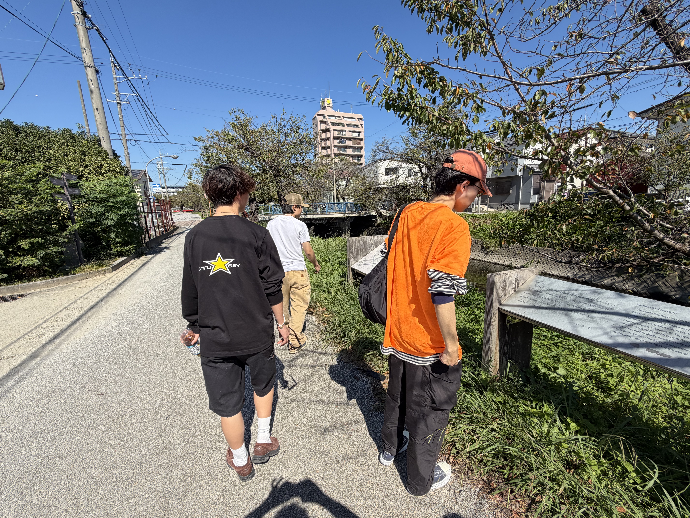
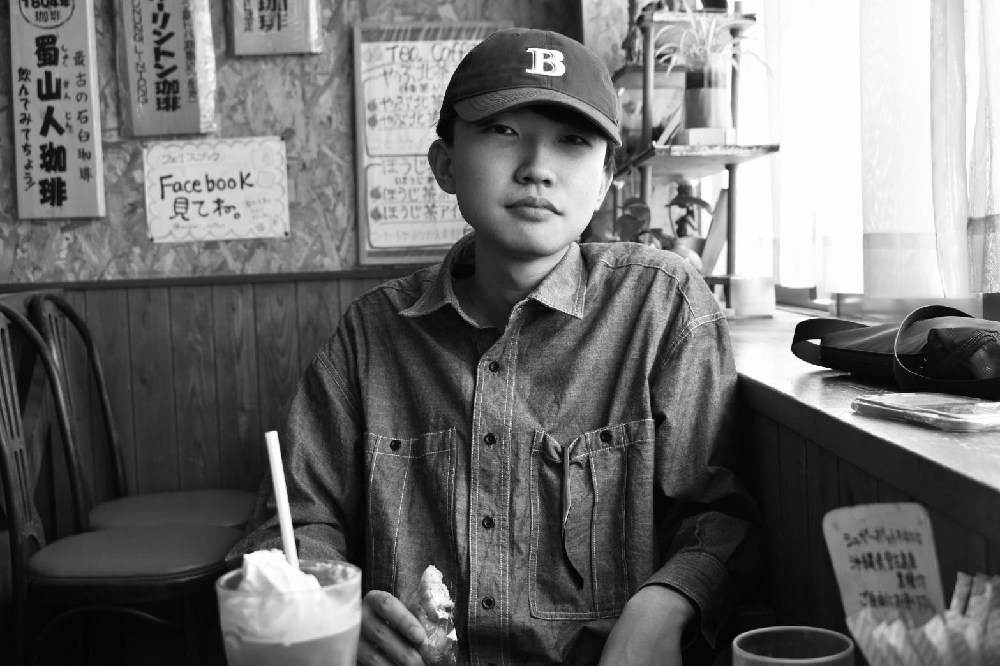

STUDENT-LED CREATIVE PROJECTS
地域を、
創造する。
Ideas grow into experiences.
学生の視点とクリエイティブの力で、
地域に新しい発見と体験を生み出す。
それが、咲tiveです。
UNSEEN IN YOUR TOWN.
01 / PROJECTS
進行中のプロジェクト
カードをめくって、それぞれの企画の裏側をのぞいてみてください。
↻ カードをクリックすると、詳細が表示されます。
02 / ABOUT SAKUTIVE
学生の視点で、
地域の可能性を創造する。
咲tive（さくてぃぶ）は、
学生の視点とクリエイティブの力を活かし、
地域に新しい発見や体験を
生み出すプロジェクトチームです。
文化・歴史・人・場所に目を向け、
企画・デザイン・映像など、
さまざまな表現を通して
地域の可能性を広げていきます。
03 / COLLABORATION
一緒に、
つくりませんか
アイデアを持ち込む人も、
制作を支える人も。
プロジェクトはさまざまな関わりから生まれます
04 / MEMBER
CREATIVE TEAM
咲tiveは、企画・デザイン・映像・地域連携を横断しながら、地域の魅力を発見し、体験として届けるチームです。
一人ひとりの視点が、まちに新しいデザインを制作します。
TEAM MEMBERS
MEMBER
山田 優弥
地域の魅力を発見し、体験へ変えるきっかけづくりを担当しています。
名古屋造形大学造形学部情報表現領域一年生
タップして写真を見る
西村望莉
地域の物語を、見た目と感情で伝えるデザインを考えています。
タップして写真を見る
山田 琢翔
人と場所のつながりを大切にし、地域の新しい魅力を企画に落とし込んでいます。
タップして写真を見る古川 陽向
人と場所のつながりを大切にし、地域の新しい魅力を企画に落とし込んでいます。
タップして写真を見る守岡 穂夏
町の風景、文化の魅力が伝わるデザインを提案。
タップして写真を見る川口 真奈
町の風景、文化の魅力が伝わるデザインを提案。
タップして写真を見る中村 晃輔
地域の課題を発見し、体験や仕組みとして形にする企画とデザインを行っています。
タップして写真を見る
壁谷 弦
地域の課題を発見し、体験や仕組みとして形にする企画とデザインを行っています。
タップして写真を見る多田 風花
地域の情報を、わかりやすく伝わる体験として形にする役割を担っています。
タップして写真を見る牧野 莉子
地域の情報を、わかりやすく伝わる体験として形にする役割を担っています。
タップして写真を見るTEAM CULTURE
一歩先の好奇心を、
一緒に育てる。
咲tiveでは、地域の人と関わることを大切にしながら、企画の価値と制作の楽しさを一緒に育んでいます。
「自分たちのまちにある面白さ」を探し、見つけたものを、もっと多くの人に届く形にしていきます。
- 地域の中で起こる「面白い」を見つける
- 企画・制作・運営までを一緒に考える
- 学生の視点を尊重しながら、実社会へつなぐ
05 / CONTACT
まずは、話すところから。
プロジェクトの相談、協力の申し出、参加について。
お気軽にご連絡ください。